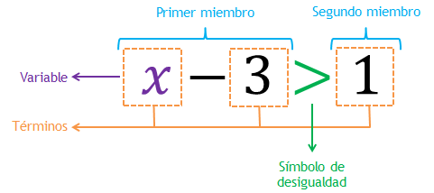

INECUACIONES
INECUACIONES
Objetivos del trabajo
- Sacar un diez
- Hacer entender que son las inecuaciones
- Proponer ejercicios sencillos de inecuaciones

En multitud de disciplinas se hace uso de la Estadística para sacar conclusiones generales a partir de un número menor de datos: en la empresas demoscópicas, para hacer estudios de intención de voto, en medicina, para hacer estudios epidemiológicos y un largo etc.
Para éste proceso de inferir o sacar conclusiones se utilizan métodos estadísticos basados en la Probabilidad.
La Probabilidad es un valor que mide la frecuencia con la que aparece un resultado(o varios) al realizar un experimento aleatorio.